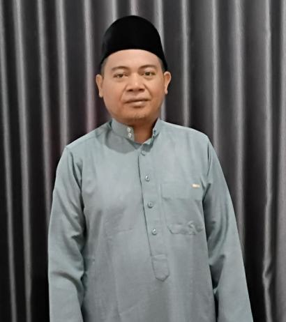

۞
Ilmu Al-Qur’an
& Tafsir
‘Ulūm al-Qur’ān, metodologi tafsir, qirā’āt, dan penelusuran makna ayat dalam khazanah klasik dan kontemporer.
Tapa’ul Habdin, Lc., MA
Akademisi Ilmu Al-Qur’an dan Tafsir, peneliti, pendidik, dan pegiat dakwah yang menghubungkan kedalaman khazanah keilmuan Islam dengan persoalan kehidupan masa kini.
Saksikan kajian di YouTube Majelis Nurillah
Berangkat dari pendidikan Al-Azhar di Kairo, perjalanan keilmuan berlanjut ke Institut Ilmu Al-Qur’an (IIQ) Jakarta dan pengabdian di Indralaya.
Tapa’ul Habdin, Lc., MA merupakan dosen pada Program Studi Ilmu Al-Qur’an dan Tafsir, Fakultas Ushuluddin, Universitas Al-Qur’an Ittifaqiah (UQI) Indralaya. Sejak 2015 beliau juga mengajar di Madrasah Aliyah Al-Ittifaqiah.
Fokus perhatiannya mencakup ilmu-ilmu Al-Qur’an, penafsiran, tradisi spiritual Islam, serta pengembangan nilai-nilai Qur’ani untuk tantangan masyarakat dan ruang digital.
Lihat perjalanan pendidikan & karier ↗Kepakaran yang tumbuh melalui kajian teks, ruang kelas, penelitian, dan kehidupan bermasyarakat.
‘Ulūm al-Qur’ān, metodologi tafsir, qirā’āt, dan penelusuran makna ayat dalam khazanah klasik dan kontemporer.
Pendekatan spiritual dan tujuan syariat dalam membangun pemahaman keislaman yang berimbang dan relevan.
Pengajaran, pengembangan pembelajaran, pendampingan akademik, dan pembinaan potensi generasi Qur’ani.
Penguatan ruang belajar, pembinaan komunitas, karya shalawat, dan tradisi keilmuan yang dekat dengan masyarakat.
Publikasi yang telah ditelusuri melalui situs jurnal penerbit dan pengindeks ilmiah; setiap entri terhubung dengan sumbernya.
Keilmuan tidak berhenti pada pemahaman teks. Ia memperoleh maknanya ketika menjadi tuntunan bagi kehidupan.
Buku, riset yang sedang berjalan, proyek literasi, dan aktivitas komunitas; status setiap karya disebutkan secara terbuka.
S1 · Tafsir dan Ilmu-ilmu Al-Qur’an
S2 · Ulumul Qur’an dan Ulumul Hadits
S3 · Ilmu Al-Qur’an dan Tafsir (dalam studi)
Pendidikan dan pembinaan peserta didik
Fakultas Ushuluddin
Sekretaris Komisi Fatwa (periode dalam CV)
Koordinator pencarian bakat, pembinaan, dan pelatihan (periode dalam CV)
Perhatian pada keilmuan juga diwujudkan dalam pembinaan majelis, penguatan pendidikan Al-Qur’an, serta keterlibatan dalam pengabdian dan kelembagaan keagamaan.
Ruang pembinaan kecintaan kepada Rasulullah ﷺ, pembelajaran, dan kebersamaan melalui zikir serta shalawat.
Kunjungi kanal YouTube resmi yang diinformasikan pemilik ↗Inisiatif pembinaan dan pembelajaran Al-Qur’an yang terkait dengan kegiatan keagamaan setempat.
PEMBINAAN AL-QUR’ANKegiatan pengabdian dan publikasi bersama terkait penguatan karakter siswa pada era Society 5.0.
Baca publikasi ↗Terhubung langsung dengan kanal YouTube Majelis Nurillah yang diinformasikan pemilik website. Jelajahi kajian, dokumentasi, siaran langsung, dan video pendek melalui YouTube.
@MajelisNurillah · YouTube
Ruang digital untuk mendekatkan masyarakat pada nilai-nilai Al-Qur’an, tradisi zikir, shalawat, dan pembelajaran keislaman. Ikuti kanal untuk melihat konten yang benar-benar diterbitkan oleh pengelola.
Video shalawat terbaru dapat ditampilkan otomatis dari unggahan kanal ini setelah sinkronisasi terjadwal diaktifkan saat website dipublikasikan.
Galeri ini mengikuti unggahan shalawat terbaru, diurutkan berdasarkan tanggal publikasi. Video bisa ditonton langsung tanpa meninggalkan website.
Untuk diskusi ilmiah, kolaborasi riset, undangan kajian, pembinaan Al-Qur’an, atau permintaan informasi karya, silakan siapkan pesan melalui formulir berikut.
Perubahan hanya tersimpan di browser ini, bukan di website yang dilihat pengunjung lain. Ekspor JSON dan perbarui berkas website untuk menerbitkan secara publik. Tidak ada sistem login/server.